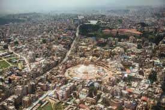
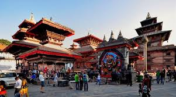
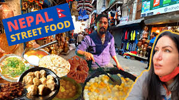
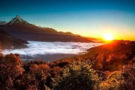

About Kathmandu
Kathmandu, the capital city of Nepal, is a vibrant and culturally rich destination nestled in the heart of the Himalayas. It is renowned for its ancient temples, stunning architecture, and bustling streets.
Things to Do
Visitors to Kathmandu can explore the UNESCO World Heritage Sites such as Swayambhunath Stupa (Monkey Temple), Boudhanath Stupa, and the historic Durbar Squares. Additionally, adventurous souls can embark on treks to the nearby Himalayan peaks or enjoy a thrilling flight over the majestic Mount Everest.
Local Cuisine
No trip to Kathmandu is complete without savoring the delicious local cuisine. From momos (dumplings) to dal bhat (lentils and rice), the city offers a diverse array of culinary delights that will tantalize your taste buds.
{kind=link}
Explore Kathmandu
Discover the beauty of Kathmandu through these stunning images:

The vibrant streets of Kathmandu are bustling with energy, filled with colorful markets, traditional shops, and friendly locals.

Kathmandu is home to numerous ancient temples and sacred sites, each offering a glimpse into the rich cultural heritage of Nepal.
{kind=link}
The Durbar Squares of Kathmandu Valley are UNESCO World Heritage Sites, featuring exquisite architecture, intricate woodcarvings, and historical significance.
{kind=link}
Indulge in the diverse flavors of Kathmandu's street food, from savory momos to spicy chaats, and experience the culinary delights of Nepal.
{kind=link}
Witness breathtaking sunrises over the Himalayas from vantage points around Kathmandu, offering unforgettable panoramic views of the majestic peaks.